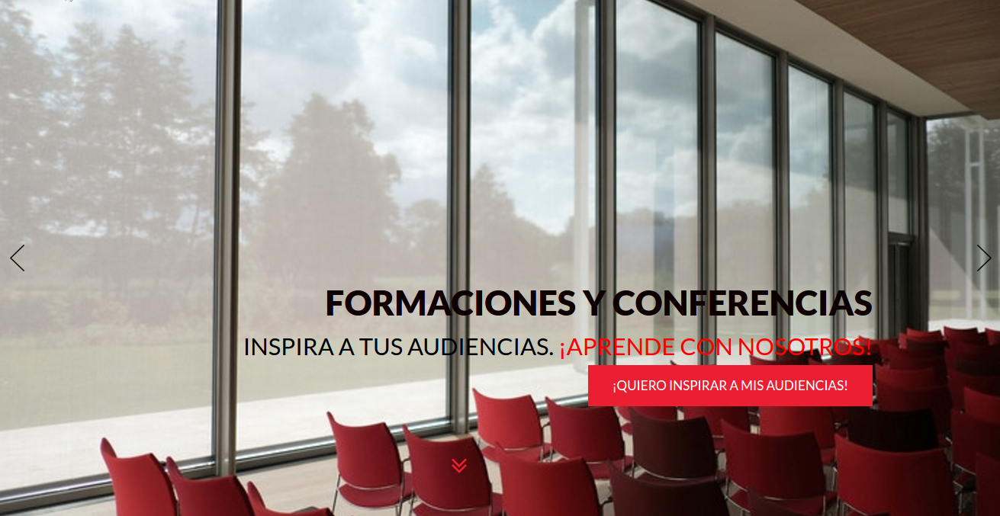
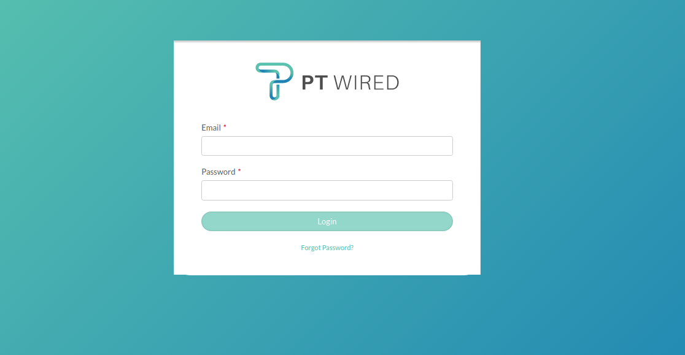
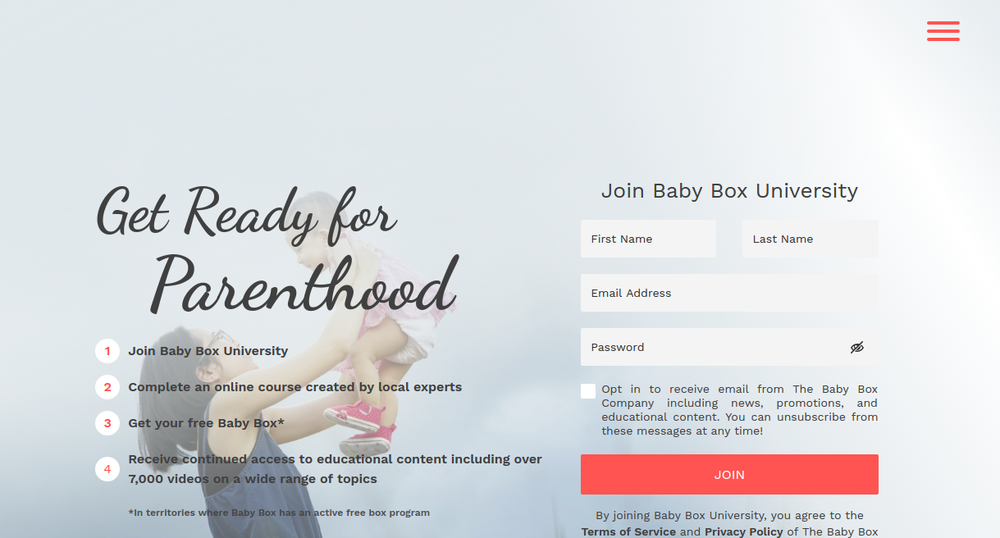
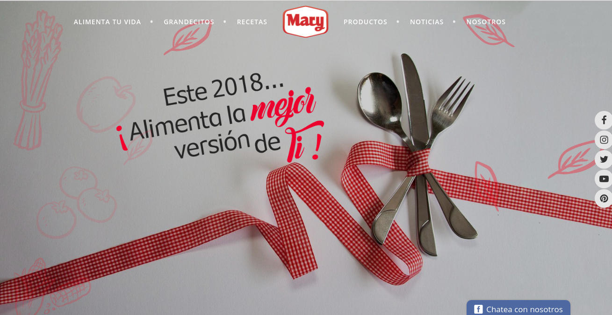
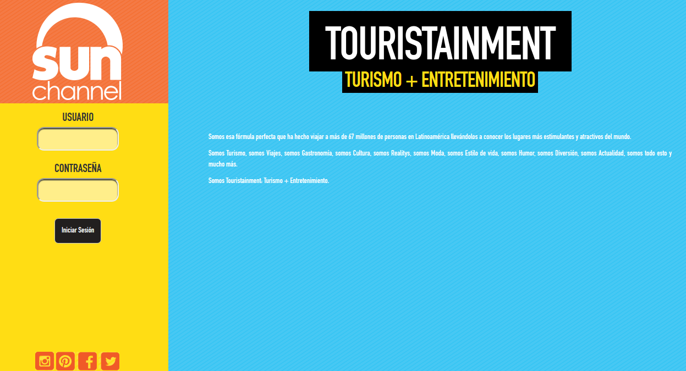
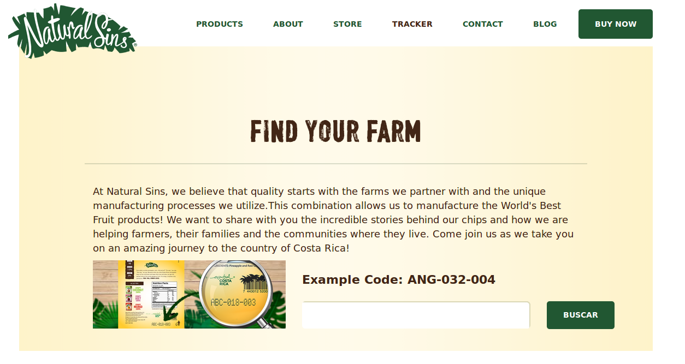
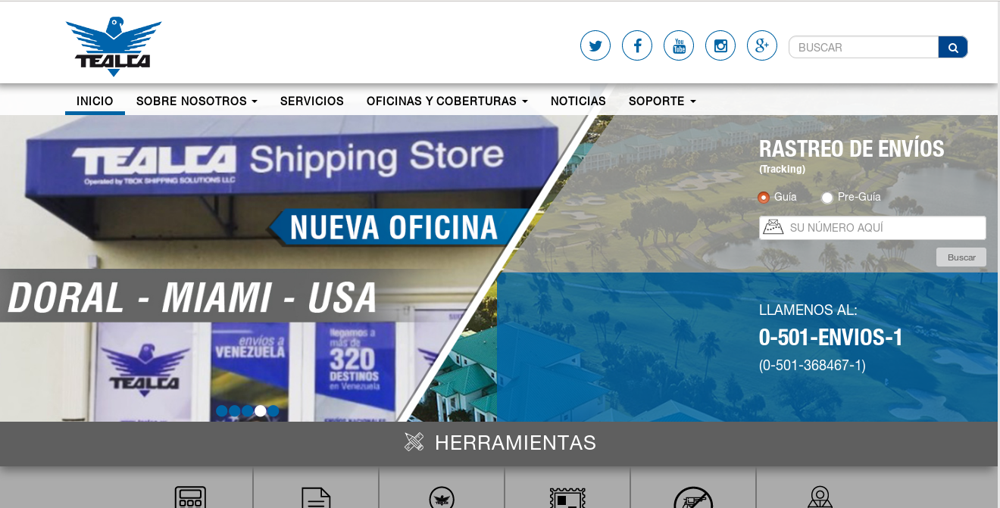
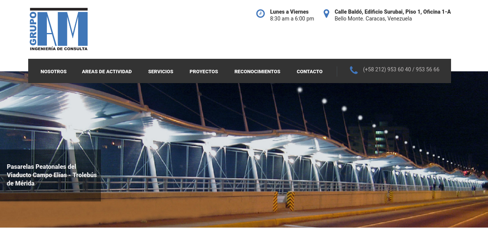
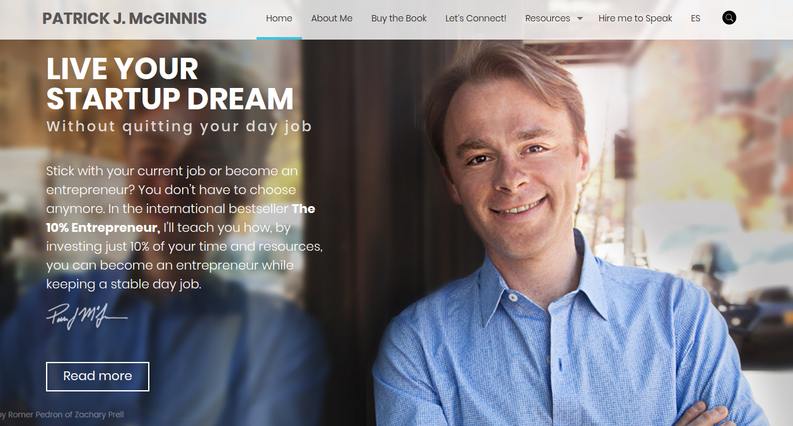
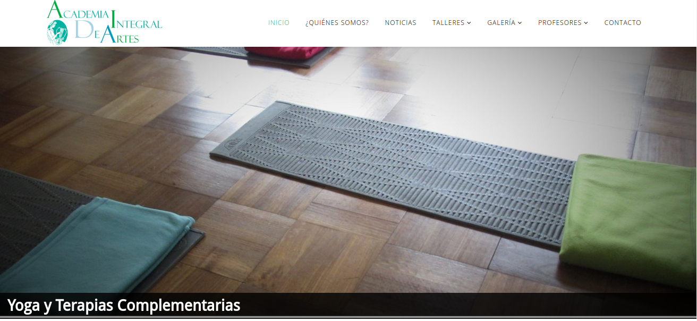

Líder Positivo

PT Wired
PT Wired

Description
The project was already started when I was called for help. This project was a challenge because I was in direct contact with the client and its people, and I was alone, but it helped me a lot to improve my developer and bilingual skills. We used React, Redux and AWS (Cloudwatch, DynamoDB and Lambda functions) to create a multi role user website-application related to communication between physical therapists and patients. Also, the patient app, was developed using cordoba (android & iOS). I couldn’t finish the project because contract expired.
Technologies
- React/Redux
- Node.js (Express.js)
- AWS (Lambda Functions, S3, DynamoDB)
- Phonegap
Role
Fullstack Developer
Tappian Energy
Tappian Energy

Description
I started this project with a couple of co-workers (and friends) from the scratch and this left another mark in my professional career because the work I did in the project along with my partners, not only in the development but in the team management, costed me the intermediate promotion (Semi-Senior). This project was made in React, Redux, Stylus, Webpack, Docker, Porstgres and a microframework called Exosphere. I couldn’t finish the project because contract expired.
Technologies
- React
- Exosphere
- Redux
- Postgres
Role
Frontend Developer
Baby Box University
Netuno

Alimentos Mary

Sun Channel Monitoring System

Natural Sins Tracker & Finder

Tealca
Tealca

Description
Tealca was one of the best projects I’ve been involved in because it represented a lot to the enterprise where I worked, and for me it was a challenge due to the technologies used. The project was already running when I entered and I was alone in the most part, so I had to learn technologies like Angular.js, Slim and gulp management. This project also has an Admin section where I also worked. The main parts I worked are the "restriction"" section, "tracking"" section, "news" page and section, the "about us"" section and several functionalities related to admin.
Technologies
- Angular.js
- Slim
- Postgres/li>
Role
Developer
Gabo Brown
Gabo Brown
Description
This website currently works as a portfolio for a Graphic Designer called Gabriel Moreno, where he shows his skills and projects. I did a lot here, all the menus styles and behavior, the homepage projects effect, the footer of all the site and the entire contact and about sections. This also was made in Wordpress. The project was already running when I entered to the team.
Technologies
- Wordpress
- Postgres
Role
Developer
Grupo AM
Grupo AM

Description
I worked in this project for around 2 weeks, it was in production when it came to me. I solved styles bug and created a the multilevel menu behavior. Also I improved the behavior of a section called “Reconocimientos”. This website was made in Wordpress.
Technologies
- Wordpress
- Postgres
Role
Developer
Patrick McGinnis
